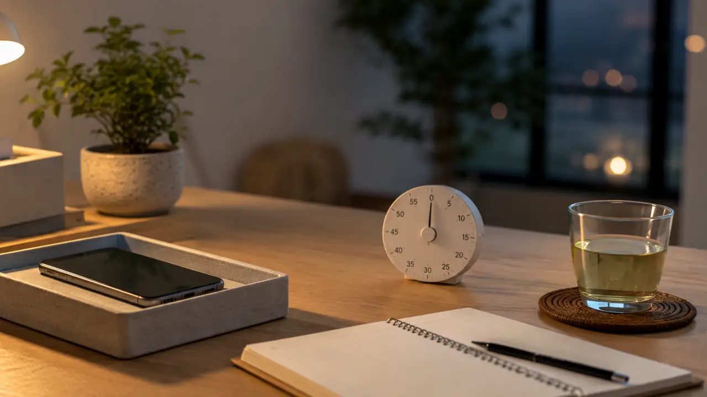
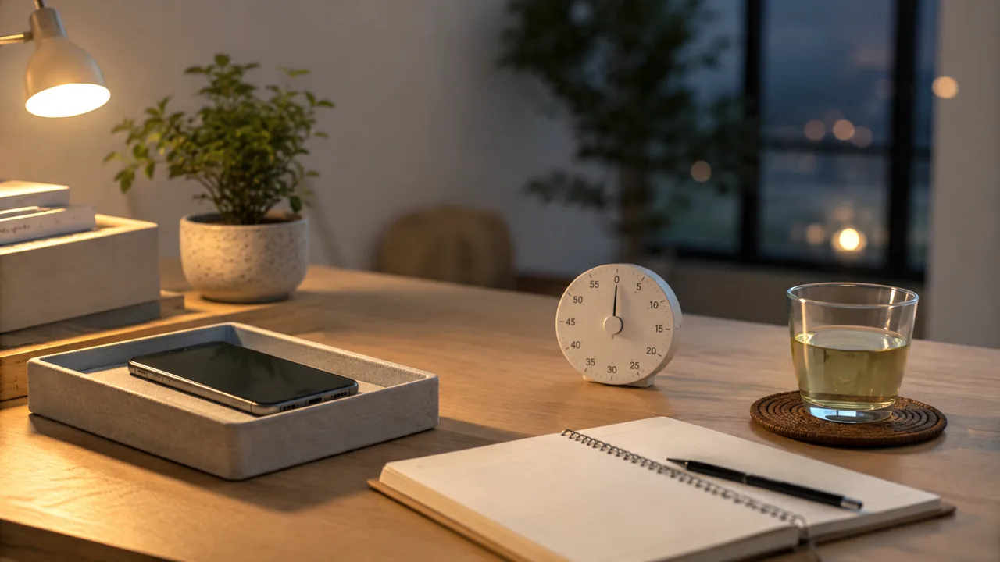
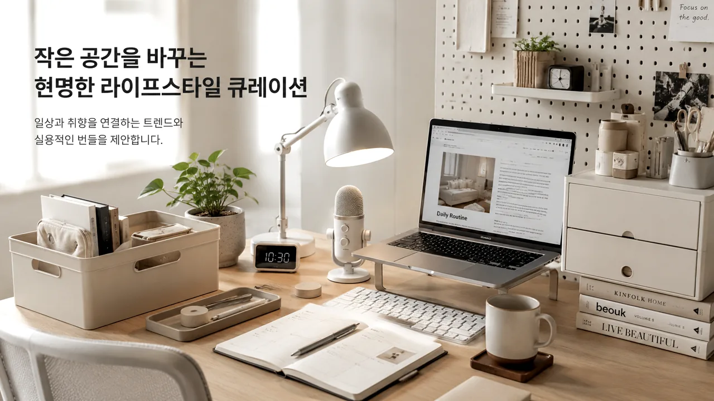
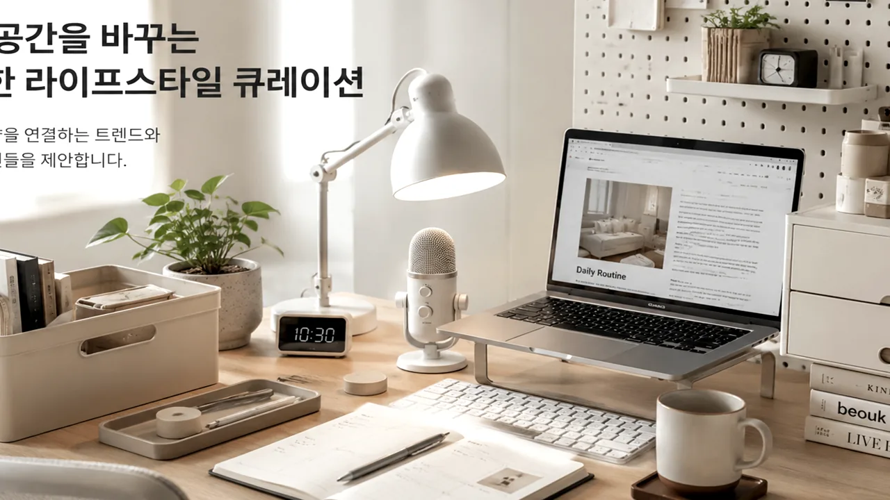

TrendFlow Guide
퇴근 후 집중
1. 퇴근 후 30분 집중 루틴 실사용 리뷰
퇴근 후 바로 눕지 않고 30분만 작업에 들어가기 위한 환경 설정 루틴입니다.
글 보기 →집중력 & 웰빙은 스마트폰, 알림, 수면, 퇴근 후 루틴을 작게 바꾸는 카테고리입니다.

Category Overview먼저 필요한 글 하나만 골라서 읽어보세요.
퇴근 후 바로 눕지 않고 30분만 작업에 들어가기 위한 환경 설정 루틴입니다.
글 보기 →
TrendFlow Guide완전 차단과 부분 차단, 시간대 제한을 비교해 유지하기 쉬운 알림 설정법을 정리합니다.
글 보기 →
TrendFlow Guide충전 위치, 조명, 대체 행동을 바꿔 수면 전 스마트폰 시간을 줄이는 방법입니다.
글 보기 →스마트폰 타이머와 아날로그 타이머의 차이를 비교해 집중 환경을 정리합니다.
글 보기 →
TrendFlow Guide퇴근 후 무의식적으로 쇼츠를 보는 시간을 줄이기 위한 대체 행동 목록입니다.
글 보기 →바로 사기 전에 내 상황과 맞는지 먼저 확인하세요.
| 주제 | 글 제목 | 읽는 방식 |
|---|---|---|
| 퇴근 후 집중 | 퇴근 후 30분 집중 루틴 실사용 리뷰 | 내 상황 확인 → 필요한 기준 보기 → 하나만 적용하기 |
| 알림 다이어트 | 스마트폰 알림 줄이기 설정 비교 | 내 상황 확인 → 필요한 기준 보기 → 하나만 적용하기 |
| 수면 루틴 | 잠들기 전 화면 시간을 줄이는 3단계 루틴 | 내 상황 확인 → 필요한 기준 보기 → 하나만 적용하기 |
| 25분 집중 | 책상 타이머 25분 집중법 실사용 비교 | 내 상황 확인 → 필요한 기준 보기 → 하나만 적용하기 |
| 대체 행동 | 퇴근 후 스마트폰 대신 할 일 5가지 | 내 상황 확인 → 필요한 기준 보기 → 하나만 적용하기 |